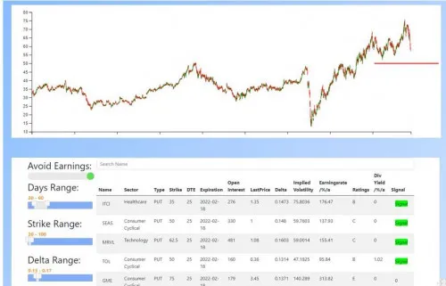

Option Screener Basic
Produktprofil · Marktplatz-Daten 2026-10-09 · Verkaufsseiten-Recherche 2026-10-09 · Kategorien: Finances
- Option Screener Basic ist ein/e Mitgliederbereich & Videokurs in Finances, vertrieben über den Digistore24-Marktplatz von Anbieter mc_fireman, gelistet seit 2022-01-25.
- Listenpreis $469.06; Digistore24 meldet — Checkout-Konversion, — Stornierungsquote und 20 % Affiliate-Provision.
- Verdienst pro Verkauf (Affiliate): $93.82 (Anbieter-seitige Statistik, keine Prognose).
Interesse an Option Screener Basic? Aktueller Preis, Boni und Garantiebedingungen finden Sie auf der offiziellen Seite des Anbieters:
Offizielle Verkaufsseite ansehen
Affiliate-Link (Werbung) — wir verdienen ggf. eine Provision, ohne Mehrkosten für Sie.

Marktplatz-Daten
| Produkttyp | Mitgliederbereich & Videokurs |
|---|---|
| Preis | $469.06 (Subscription) |
| Affiliate-Provision | 20 % |
| Garantie/Rückgabe | Laut Verkaufsseite des Anbieters — vor dem Kauf auf der offiziellen Seite prüfen |
| Anbieter | mc_fireman (gelistet seit 2022-01-25) |
| Marktplatz-Statistiken* | Checkout-Konversion — · Stornoquote — · Verdienst/Verkauf $93.82 |
* Anbieter-seitige Statistiken von Digistore24; sie hängen von der Traffic-Qualität ab und sind keine Prognose.
Marktplatz-Beschreibung des Anbieters
Dieses Produkt erlaubt Ihnen Cash Secured Puts zu scannen. Sie erhalten aus über 1.000.000 Optionsketten, die täglich wechseln Handelssignale, die auch durch Sie angepasst werden können. Es können die Optionszeiträume, die Strike Preise und das Delta angepasst werden. Auch lange erprobte Handelssignale stehen zur Verfügung. Diverse Filter erlauben Ihnen extrem schnell Scanergebnisse zu erhalten. A…
Von der Verkaufsseite des Anbieters
Seitentitel: Tradesscanner
Abschnitts-Überschriften
- Option Screener Basic
- TradesScanner Option Screener Basic - der einfache Einstieg in den Optionshandel
Einstiegstext
Mit dem Option Screener Basic bietet der TradesScanner ein zentrales Werkzeug, das den Auswahlprozess von Aktienoptionen deutlich vereinfacht. Bisher war es oft nötig, Aktien zunächst separat zu filtern, mögliche Strategien zu definieren und dann in der Brokersoftware mühsam geeignete Optionsketten zu vergleichen. Dieser zeitraubende Prozess wird mit dem Option Screener auf wenige Klicks reduziert.
Der Screener liefert eine klare Auswahl an Chancen, basierend auf praxisnahen Kriterien wie:
Damit lassen sich z. B. Strategien wie ein Bull Put Spread effizient vorbereiten und direkt bewerten.
Ein Klick auf den Basiswert öffnet den Chart mit relevanten Daten und Open-Interest-Bereichen. So können Trader ihre Strategie sofort anpassen und direkt beim Broker umsetzen - schnell, übersichtlich und auf Basis verlässlicher Signale.
CTA-Buttons: „Buy Now"
Recherche-Methode: rohes HTML · 730 Wörter · Qualität: medium · recherchiert am 2026-10-09. Vollständige Recherche-Datei (MD) ↗
Ähnliche Angebote in Finanzen

Bewerbe die Nummer #1 Online NFT & Web3 Masterclass für NFT & Web3 Investoren und Anleger. Beschreibung: Eine Masterclass. Eine Plattform. Alles dabei.

498,50 € Provision pro Verkauf – plus Folgeprovisionen Du schickst den Interessenten. Unser professioneller Nachfolge-Workshop übernimmt den Verkauf. Thema: Imm
Bundle aus mehreren Produkten zum Thema sichere Optionsstrategien. Als Affiliate bewirbst Du ein zentrales Thema – der Kunde durchläuft einen mehrstufigen Conve

Affiliate-Partner,befreit eure Leser, Interessenten, Kunden oder Mitglieder von der Steuerpflicht! Ja, richtig gelesen!Es gibt sie, die Steuerfreiheit!Sogar gan
Wo Sie es sich ansehen können
Aktuelle Preise, Garantie und Boni finden Sie auf der offiziellen Verkaufsseite:
Offizielle Verkaufsseite ansehen
Das ist ein Affiliate-Link (Werbung) — kaufen Sie darüber, verdienen wir ggf. eine Provision, ohne Mehrkosten für Sie.